SpeakON Agent
2026-10-20T12:00:00Z · announcement-with-earlier-availability
中文 · English · Overview / 总览
Editorial revision / 编辑修订；original cutoff / 原截止 2026-10-20T14:08:00Z。Collection followed; not a new issue. Counts exclude duplicate summary text.
2026-10-20T12:00:00Z · announcement-with-earlier-availability
2026-10-20 · 24h-new-regional-product-launch
2026-10-20 · dated today; exact publication time not stated; independently surfaced by 05:30 PT media before cutoff
2026-10-19 · near-three-day supplement; date-only publication cannot establish 24h boundary
2026-10-19T10:01:40Z · near-three-day-supplement
2026-10-19T10:59:45Z · near-three-day-supplement
2026-10-20T10:21:22Z · original-window code observation added in revision
2026-10-19 · near-three-day; date-only, strict 24h boundary unproven
2026-10-19 · near-three-day; date-only, strict 24h boundary unproven
2026-10-19 · near-three-day; date-only, strict 24h boundary unproven
2026-10-19T14:27:41Z · main-window
2026-10-19T17:59:58Z · main-window
2026-10-19T06:37:54Z · near-three-day
2026-10-15 · seven-day-review; date-only, strict 24h boundary unproven
2026-10-16 · seven-day-review; date-only, strict 24h boundary unproven
2026-10-13 · seven-day-report-review; date-only, strict 24h boundary unproven
2026-10-17T10:27:00Z · seven-day-review
2026-10-19T17:00:00Z · main-window
2026-10-15T16:05:00Z · seven-day-review
2026-10-14 · seven-day-review; date-only, strict 24h boundary unproven
2026-10-16 · seven-day-review; date-only, strict 24h boundary unproven
2026-10-20T13:00:00Z · main-window
2026-10-20T12:01:00Z · main-window
2026-10-19 · near-three-day; date-only, strict 24h boundary unproven
2026-10-17T11:30:56Z · seven-day-review
2026-10-17T01:31:47Z · seven-day-review
2026-10-19T13:08:34Z · near-three-day
2026-10-19T01:51:14Z · near-three-day
2026-10-15 · seven-day-review; date-only, strict 24h boundary unproven
2026-10-19 · near-three-day; date-only, strict 24h boundary unproven
2026-10-19 · near-three-day; date-only, strict 24h boundary unproven
2026-10-20T10:00:00Z · main-window
2026-10-19 · near-three-day; date-only, strict 24h boundary unproven
2026-10-19 · near-three-day; date-only, strict 24h boundary unproven
2026-10-19 · near-three-day; date-only, strict 24h boundary unproven
2026-10-15 · seven-day-review; date-only, strict 24h boundary unproven
2026-10-19 · near-three-day; date-only, strict 24h boundary unproven
2026-10-19T21:38:27Z · main-window
2026-10-20T11:03:13Z · main-window
厂商产品图：任务与动作界面；不是编辑实测。 Vendor product image: tasks and actions; not an editorial hands-on test.
Source page · Original image · 2026-10-20T14:21:41.743Z

SHA256 e9ca7122543f7590aa0df47b54a6c4b65b85334a85e3b1ddca4fa8d87ac44c25
MIP官方网页问数演示，示例数据与状态不等于真实客户部署。 MIP official website demonstration; illustrative data and states, not a customer deployment.
Source page · Original image · 2026-10-20T14:21:51.863Z

SHA256 168cee67a7c9853ba9a726dcfb83053158812fa2c6f08b158e8d9fd1373a90ef
Synaptics官方SL板卡与包装产品图；未在本次运行硬件。 Synaptics official SL board and packaging product image; hardware was not run for this edition.
Source page · Original image · 2026-10-20T14:28:07.413Z

SHA256 88583853a81c15d74149140c70bb0d309d9083c087ee95025127130dbadcf179
Google官方Tensor API视频演示帧；本次另行访问在线演示曾初始化失败。 Google official Tensor API demo frame; a separate access attempt failed to initialize the live demo.
Source page · Original image · 2026-10-20T14:21:52.075Z

SHA256 65f89f7ba4a823cc9f9f7b98617b5651706af7ffb6f0fb38ecb422bda840e280
AGANTILA / Deniz Yilmaz真实Linux会话截图；并非报道中的Windows故障现场。 Real Linux-session screenshot by AGANTILA / Deniz Yilmaz; not the reported Windows failure.
Source page · Original image · 2026-10-20
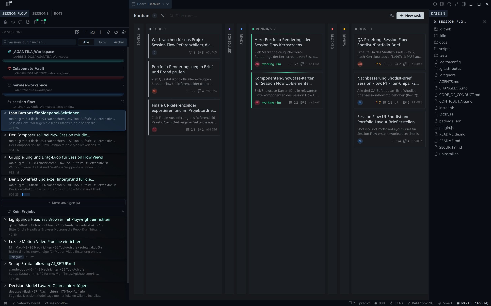
SHA256 84149996f4da7fe4933e2b79235f54cea62d28b6dda15c20fb2375e39cb4bf73
VISAGENT原论文完整流程图的缩放截图，研究原型而非商用品界面。 Scaled capture of the complete original VISAGENT workflow figure: research, not a commercial UI.
Source page · Original image · 2026-10-20T14:21:44.576Z

SHA256 733d7c115ed022d2fbcceffbc894631cf4ea00204c3a7594e5397ffe6b6df479
作者仓库真实界面／sample content。示例对话，未连接桥接器、未共享屏幕；非实测执行记录。 Author repository UI / sample content. Example conversation; bridge disconnected and screen sharing off. Not a tested execution log.
Source page · Original image · 2026-10-20T15:44:49Z

SHA256 34efbc6d75fa3bdf553c0da93095251c71fa5f743db1eb762d4f91975b675b0f
Exa官方结构化结果示例卡；SDK数据供给图证，不是消费者UI或本刊实时查询。 Exa’s official structured-result example cards: SDK data evidence, not a consumer interface or a live query performed here.
Source page · Original image · 2026-10-20T16:02:51.015Z
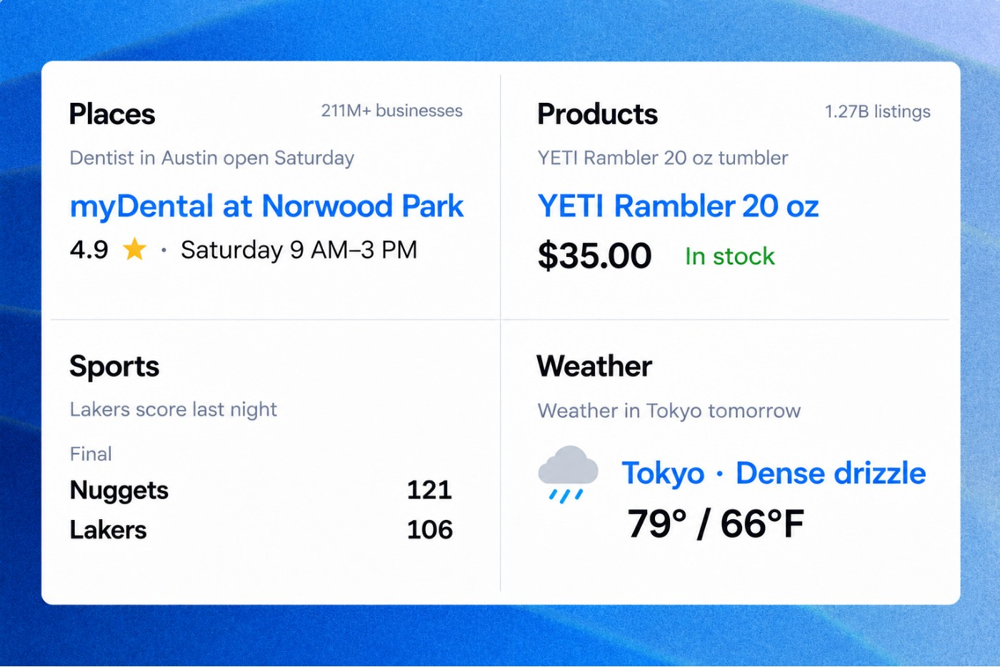
SHA256 4c61597a55a4ec588f70b7d94b183074dea75d61321641124d8289b7539e3fe0
BILL官方动画中可见的异常金额审批示例：This is expected与Deny bill；示例金额不是本刊真实账单。 Visible approval example from BILL’s official animation: This is expected and Deny bill. Sample amounts are not a real bill tested here.
Source page · Original image · 2026-10-20T16:22:42.768Z

SHA256 10d17df384b0fe00ab38aab186773f89f5f7049bb47ac7c8622a7d6863467bd4
Motive官方现有维护工单界面示例：维护提醒、处理中工单与预计费用。非未来自然语言Builder，非新Agent执行实测。 Official existing Motive maintenance example: service reminder, work order in progress and estimated cost. Not the future natural-language builder or a tested new-agent execution.
Source page · Original image · 2026-10-20T16:22:22.501Z

SHA256 95bc12431b50d5ff6fe8028ef369e06b0f86f77287dcf56f628eb5bf21957b45
Qingyang Wan等，Promptile论文图2：原型输入框、片段面板和Polish操作；非商用产品截图。 Qingyang Wan et al., Promptile Figure2: prototype input, fragment panel and Polish control; not a commercial product screenshot.
Source page · Original image · 2026-10-20T16:02:47.044Z

SHA256 4f8bcedb163858070b1eae6a88baa6fa06a050404a9c09a683c6f3a16b28bff9
Yu Zhou等，OpenVLHarness论文图2：能力层、证据渲染和每问题多模态记忆；原论文架构图，不是产品UI。 Yu Zhou et al., OpenVLHarness Figure2: capability layer, evidence rendering and per-question multimodal memory; original architecture figure, not product UI.
Source page · Original image · 2026-10-20T16:02:47.857Z
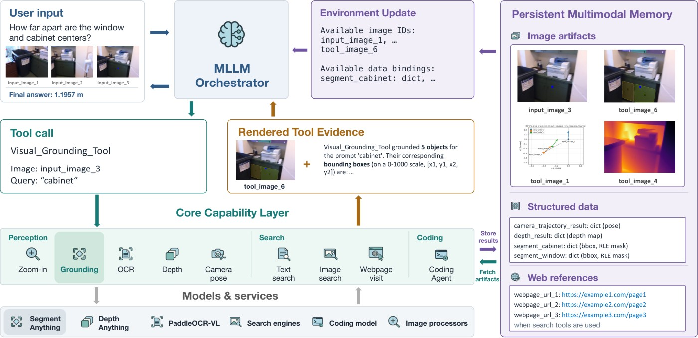
SHA256 75691c93998531001dc0e579b6434843dda8696f3805fd773faa7cc2da9c6ca2
Zhicheng Huang、Yining Cao、Haijun Xia，Cling论文图1，CC BY-NC-ND4.0。完整原图：跨页协调研究原型；保留署名，不裁切、不改图。 Zhicheng Huang, Yining Cao and Haijun Xia, Cling Figure1, CC BY-NC-ND4.0. Unmodified original overview of the cross-page coordination prototype; retain attribution, no cropping or alteration.
Source page · Original image · 2026-10-20T16:02:48.879Z

SHA256 120f943a85afb7173ee359dcb1ce12f5c89eade3416f1d7c15acb19819f0f6a1
Amazon官方Frontier与Eclipse产品展示；不是本刊实物或续航测试。 Amazon’s official Frontier and Eclipse product display; not a physical or battery test by this publication.
Source page · Original image · 2026-10-20T16:02:52.502Z

SHA256 89c550bd30cebb2dc9493acf39f1ea8f8b766bf3a900ed0ad1b882ba9f0d9947
Unitree官方演示舞台帧，由RoboticaGuide刊载；1044×548，非本刊实测，非控制台细节图。 Stage frame from Unitree's official demonstration, published by RoboticaGuide;1044×548. Not independently tested and not a detailed console view.
Source page · Original image · 2026-10-20T16:02:53.160Z

SHA256 e471cfa19b8a258559487e33e1972e1b24de074ac8ccc5389466fe07fc935136
Meta发布的Brera试点现场照片；限定八幅作品的服务，非通用导航演示。 Meta's photograph of the Brera pilot; an eight-artwork service, not a demonstration of universal navigation.
Source page · Original image · 2026-10-20T16:03:30.530Z

SHA256 138a0bd82cf49d96e3a88a57716b89e277db6178362c7718d1db10eeaa2f4c01
AiMOGA官方机器人生活场景宣传图；10月21日亮相前的展示，不证明已交付或真实家庭执行效果。 AiMOGA’s official lifestyle product promotion before the October 21 unveiling; not proof of shipment or demonstrated home performance.
Source page · Original image · 2026-10-20T16:03:31.977Z
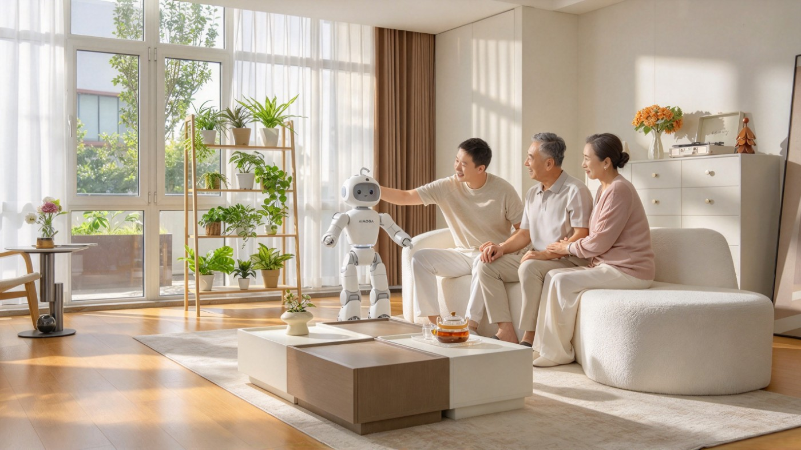
SHA256 137881ac6716cdedc3ebab809d921701152c62ce03c1b92bc0235547a7b4bb23
Dream Labs官方Maker Arm微调后任务视频封面：真实机器人、香蕉与碗的任务场景；不是完整执行记录或成功率证明。 Official poster for Dream Labs’ post-adaptation Maker Arm task video: real robot, banana and bowl scene; not a full execution record or success-rate evidence.
Source page · Original image · 2026-10-20T16:22:21.900Z
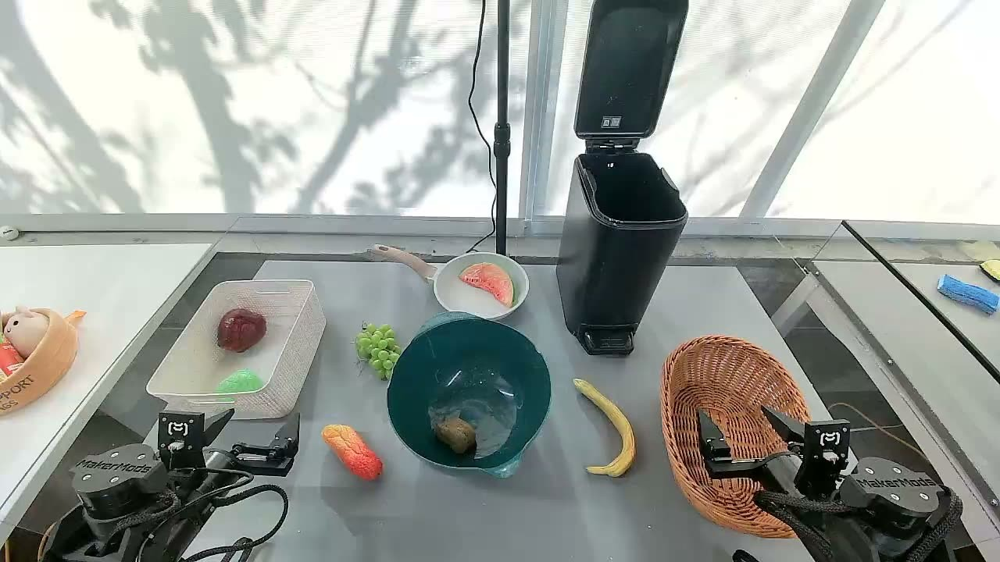
SHA256 a087f67c6bbed44a4b410c63b8fa6488d2eb1b5416a061fe7ebb721bb9e5e593
官方机加工应用实物图原图地址；非iPad UI，非三项新技能实测。 Official machining application hardware image URL; not iPad UI or a test of the three new skills.
Source page · Original image · 2026-10-20T16:07:02.917Z
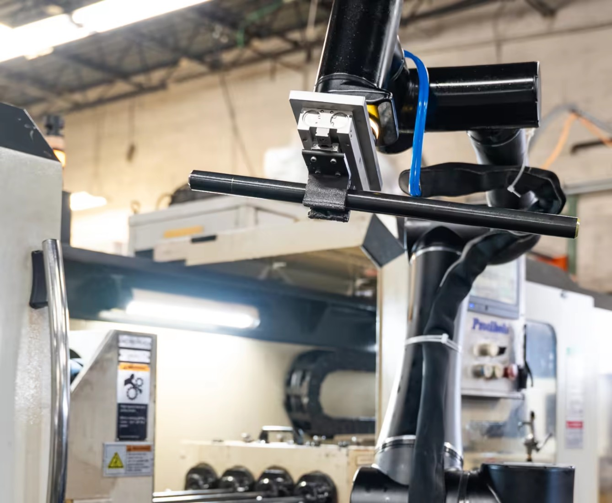
SHA256 7a2ad36630f383584383682be1b6632cbc03afb3dd8c0f33846ae4e0eaa0bb93
NEURA官方Neuron AI发布主视觉原图地址；非本刊观察到的十一分钟洗衣演示结果。 Official Neuron AI launch visual URL; not an observed result of the planned laundry demonstration.
Source page · Original image · 2026-10-20T16:07:03.901Z

SHA256 e92536997ee6dbf0015136d65b3a25675deeb1091d6b2b694cbba5550b13c9ae
微软官方Surface Laptop Ultra开盖产品图原图地址；非实测跑分，非库存证明。 Official Microsoft open-laptop product image URL; not a benchmark or inventory evidence.
Source page · Original image · 2026-10-20T16:07:05.041Z
SHA256 82284cf4a5865c582679bacaa3fc00bf14a1ee0a6bef545ca631a4ce857e6307
Lens官网来源管理示例：帮助中心与产品文档处于Active状态。厂商HTML演示，非本刊租户实测。 Lens website source-management example: help center and product documentation marked Active. Official HTML demonstration, not a tenant tested by this publication.
Source page · Original image · 2026-10-20T16:22:29.975Z
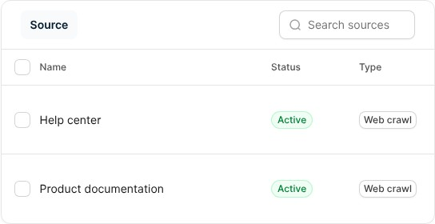
SHA256 2f87e657d5594d47100cbf83bb292f243dc1460b6468fee51f41cf33d91d1c63
Payani官方发布图中的输入与任务状态示例；厂商界面展示，不是本刊执行记录。 Input and task-state examples in Payani’s official release artwork; vendor interface presentation, not an execution tested here.
Source page · Original image · 2026-10-20T16:06:26.511Z
SHA256 f7c471700921d447724b6eed1a2467ae22c5ce4f10cdbadb63b41c10239a6f15
Cloudflare官方输入→JSON示例；图中example域名是厂商示例数据，0.55秒未经本刊复测。 Official Cloudflare input-to-JSON example. Example-domain data and the 0.55-second claim belong to the vendor; not independently rerun.
Source page · Original image · 2026-10-20T16:06:27.553Z

SHA256 8597d12200ed63b761df9dfee9d6ef7596660a1b83d301a6e395452b78d5a17f
原论文图1：菜谱随人移动而其他界面留在原处的研究情境；非本刊实测。 Original paper Figure 1: the recipe follows the wearer while other interfaces remain; an author research scenario, not our test.
Source page · Original image · 2026-10-20T16:07:07.941Z

SHA256 24910f0565192dbf3ff54f6a9c272ceb601a4fc7bd5b9b37344963dbc43e4a8d
原论文图1：候选注意事件、目标定位与隐式校准流程；示意图不证明实时眼镜端部署。 Original paper Figure 1: candidate attention events, target localization and implicit calibration; the diagram does not establish real-time deployment on glasses.
Source page · Original image · 2026-10-20T16:07:08.757Z
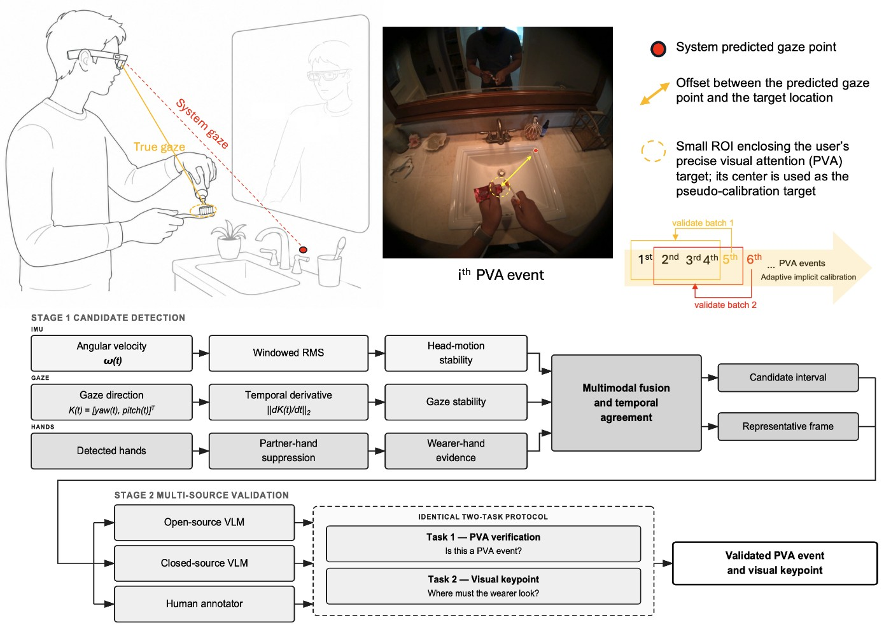
SHA256 9534d97aa877ff1ffa2e5e39e480f9f0a5b08179f9db88b3ec4e6aea35ca1007
原论文图1：Unity工具界面、Quest演示及多层表示；渲染示例不等于重建全在头显运行。 Original paper Figure 1: Unity tools, Quest demonstration and representation layers; on-headset rendering does not mean reconstruction runs there.
Source page · Original image · 2026-10-20T16:06:24.198Z

SHA256 b29b0b42fdacc7401d1b31654de06ef8e582a55a9eff783c038eead2246ed677
原论文图2：单一多模态骨干、冻结动作执行器、逐步观察及记忆反思的双循环；非机器人实机图。 Original paper Figure 2: one multimodal backbone, a frozen motion executor and local/global reflection loops; not a physical robot demonstration.
Source page · Original image · 2026-10-20T16:06:24.929Z
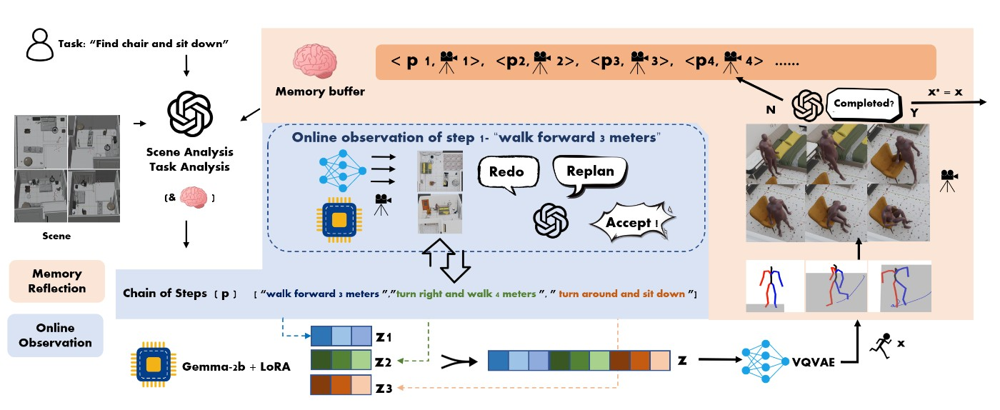
SHA256 72700228ecfed44f562057263b52992894e9e80bce5e95ddfac0029a8d996dc2
Krea 3官方API文档真实页面截图：生成端点、job_id轮询与参考图上传。API/SDK文档图证例外，不是编辑器UI或性能实测。 Actual capture of Krea 3’s official API documentation: generation endpoint, job_id polling and reference upload. API/SDK documentation evidence, not editor UI or a performance test.
Source page · Original image · 2026-10-20T16:28:43.364Z

SHA256 16370b34af57dcc76a15b7d5b076b14ebf31ed4dc14bb8f497b9b30c0977f274
Willow作者发布的Wally界面示例：同一对话反复修改回复，并以Enter粘贴。官方画廊展示，非本刊实测。 Wally interface example from Willow’s maker gallery: refine a reply in the same conversation, then Enter to paste. Official gallery presentation, not a hands-on test.
Source page · Original image · 2026-10-20T16:24:34.409Z

SHA256 08645454bb085d325d7521cd5b68537e652c9e304da9a6cf09432c6e4edf9a68
Gleap官方帮助页界面：Kai Support交接给Kai Resolve，显示AI标签；不是本刊实测工单。 Official Gleap help UI: handoff from Kai Support to Kai Resolve with the AI label; not a ticket tested by this publication.
Source page · Original image · 2026-10-20T16:13:47.640Z

SHA256 f23e8243aa5eabe6a49ce6b94848d2232add01ba9b8d16b92f67970b85908676
Different官网审核界面示例：Approve & launch与Edit；示例广告中的医疗数字不是本刊验证的结果。 Different’s official review example with Approve & launch and Edit. Medical numbers inside sample ad copy are not verified outcomes.
Source page · Original image · 2026-10-20T16:13:45.838Z
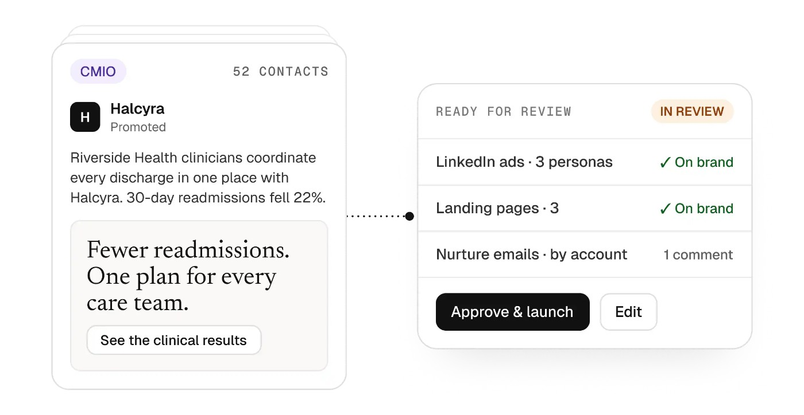
SHA256 a92ab0009a155f5a7e4d194c21211eccac4b32f2fc031f57d59c0730dda19a17
walkai-talkai 官方 Station 界面截图；产品控制台示例，不是本轮电台执行记录。 Official walkai-talkai Station screenshot; a product-console example, not a radio execution log from this review.
Source page · Original image · 2026-10-20T16:13:25.442Z
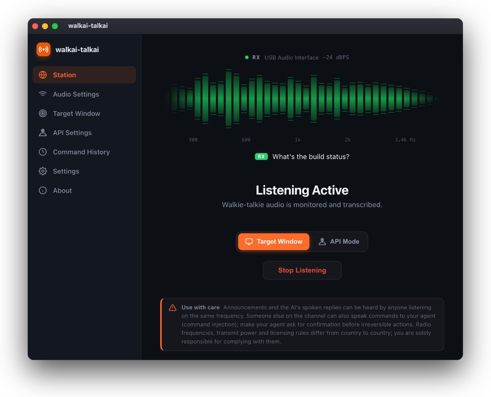
SHA256 2b144ee60e53c528f900e3ff807a455cbeb48e2d655c441e497f8a7f44cdd23e
Beam作者画廊的应用与源Mac选择界面；保留原图边缘裁切。官方展示，不代表本刊连接了远端Mac。 App and source-Mac selection interface from Beam’s maker gallery, retaining the original edge crop. Vendor presentation; no remote Mac was connected here.
Source page · Original image · 2026-10-20T16:24:23.487Z
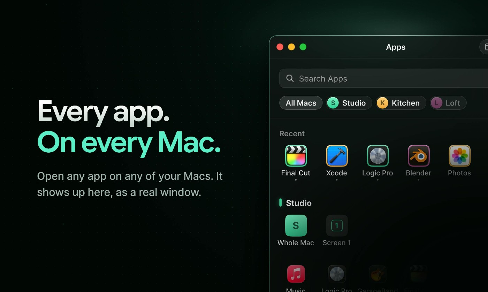
SHA256 58a8f9ee6a3551313de25555dcc83fc71dedc706b6682e07dd340beefd6f82ce
作者项目页原始设备图片；尚待下载逐图验看，不代表本刊实测或可复刻证明。 Original device image from the maker's project page. Download and visual verification pending; not an independent test or proof of reproducibility.
Source page · Original image · 2026-10-20T16:13:27.552Z
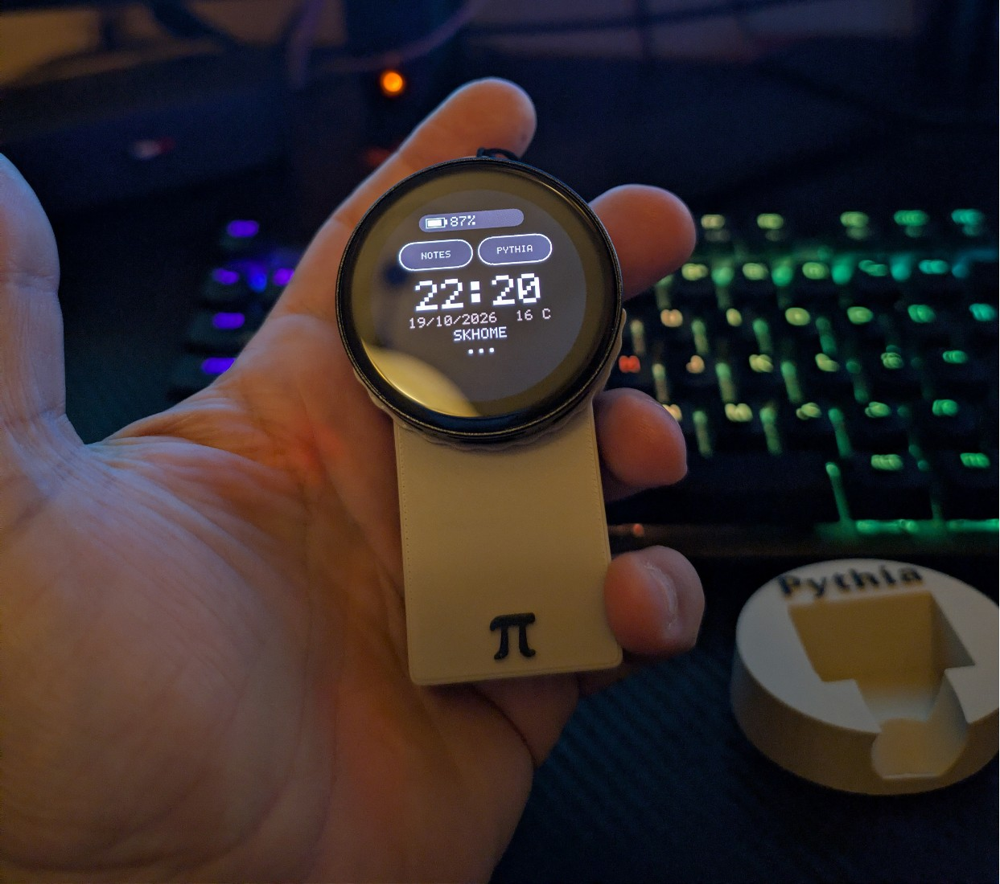
SHA256 15e6c3b1f3bc24638b38be0f1e82161053e63bf6f5b1700348dc7b0a42622199
Figma官方Specs界面：GitHub上下文提示与技术规格示例；非本刊运行结果。 Official Figma Specs interface showing a GitHub-context prompt and example technical specification; not a run by this publication.
Source page · Original image · 2026-10-20T16:13:48.714Z
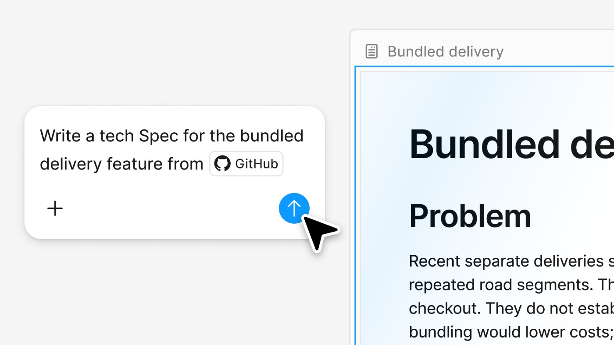
SHA256 c6e91084ea6ede7b6982c49188f96fde9bfd1213babd5cd933a73fa726cd9156
作者原项目封面：Spooky Sassy Jack-o’-Lantern实体装置；原图链接已由原文解析，尚未下载目检。 Author project cover showing the Spooky Sassy Jack-o’-Lantern build; original image URL resolved from the tutorial, but not downloaded or visually inspected.
Source page · Original image · 2026-10-20T16:13:28.214Z

SHA256 5b99aab7636de543ac4dc697d97926f2b24219b6079217fbb8b87d82c893c63b
作者固定提交内的HTML报告，由启用沙箱的CI重新渲染。输入标签均为v3.0，不证明v2.1验证效果；未执行数据差异程序。 Author HTML report at a pinned commit, rendered again in sandboxed CI. Both input labels say v3.0; this does not prove v2.1 validation. The diff program was not executed.
Source page · Original image · 2026-10-20T16:13:49.837Z
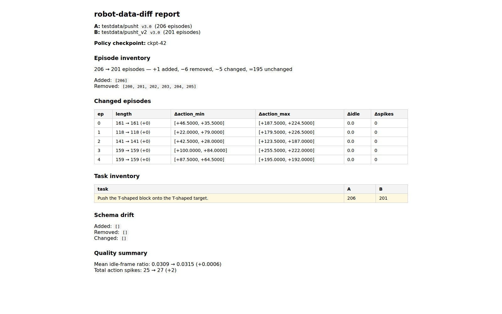
SHA256 033619de31f32537e144b8e9ffe63f1c2d630010707a4e08b24102e6046087e2
DeepSeek原仓库生产架构图；包含本次未开源的KV缓存与负载均衡等组件，不代表完整服务器已发布。 Production architecture from DeepSeek’s repository; it includes KV-cache and load-balancing components absent from this release, not a fully released server.
Source page · Original image · 2026-10-20T16:13:29.210Z
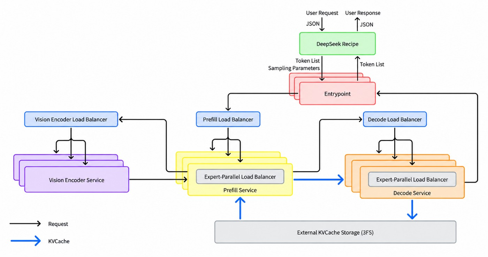
SHA256 fdb4bce74070f4cb4e84dffa7b15ed15a2429b1b60e1e966ae63316f5da53131
stats.py · diff-demo-report.html · LICENSE
commits?until=2026-10-20T14:08:00Z&per_page=100 · releases